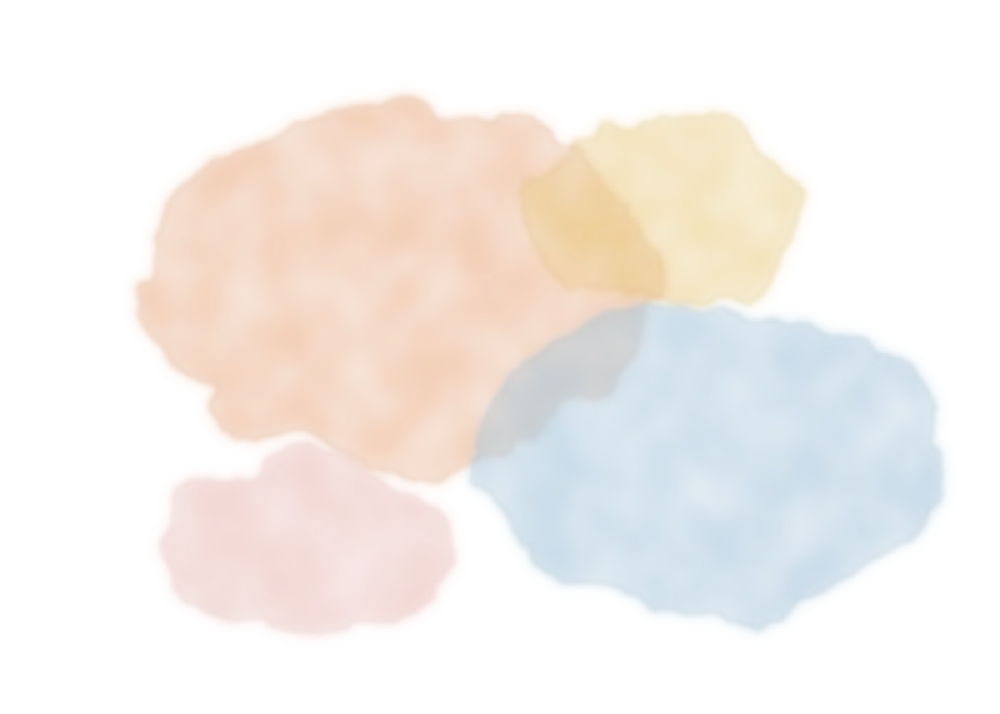
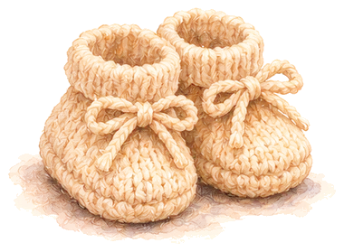
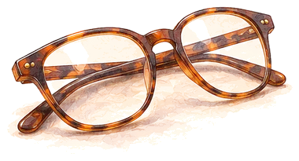
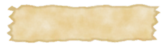

whatever the weather
Protecting what matters
Understanding your insurance, critical illness and income protection needs, including whether your existing coverage still fits your circumstances.
financial planner · Singapore
Financial planning for every stage of life.

the pages still to fill
As life changes, so do the roles and responsibilities we carry.
And with them can come different financial priorities.


planning is how the picture comes into focus
I help you make sense of these changes, so you can plan with greater clarity for yourself and the people who matter to you.
behind every photograph
Planning for what matters at every stage.
whatever the weather
Understanding your insurance, critical illness and income protection needs, including whether your existing coverage still fits your circumstances.
planted early, tended patiently
Making sense of investing and long-term wealth accumulation without unnecessary complexity.
the days you’ll frame
Preparing financially for marriage, a home, children and other major changes in responsibility.
one day, you’ll look back on all of it
Building towards financial independence, retirement and the future you want.
Carine Zheng
I believe good financial planning starts with a conversation, not a sales pitch.
We talk
A first conversation about what you already have, what you’re concerned about and what you’re working towards.
I map it out
From there, I’ll help you make sense of your options and decide what works for you.
We review it, regularly
Your circumstances change. Your priorities change. Your financial plan should be reviewed as they do.
start your album
Tell me where you are today and what you’re working towards. We can start with a conversation and take it from there.
